This page will include experience of me developing games and a brief overview of my path to game creation.
In the realm of game development, every journey begins with a spark of inspiration. For me, that spark ignited when I first picked up a controller and immersed myself in the vibrant worlds crafted by talented developers. I knew I wanted to contribute my own stories and experiences to this exciting medium. This is the tale of how I navigated the intricate labyrinth of game development, culminating in a project that showcases my skills and passion.
Chapter 1: The Vision
The initial step in my journey was to define my vision. I envisioned a platform where I could share my experiences and insights— a space that would not only display my work but would also engage fellow enthusiasts. To bring this vision to life, I set out to create a web page that would serve as my digital portfolio, a testament to my growth and creativity in the world of game development.
The design of my web page was crucial. I wanted it to be visually appealing yet functional, so I meticulously crafted the layout. Utilizing a 240px by 320px resolution as a base, I ensured that my design would be versatile enough to adapt to various screen sizes, maintaining clarity and coherence. I included a striking title, “GAME DEVELOPMENT,” which I stylized using a unique font, expletus-sans, radiating a sense of professionalism and creativity.
Chapter 2: Building the Foundation
With the vision in place, I turned to the technical aspects of web development. I incorporated essential elements like JavaScript and jQuery to enhance interactivity and responsiveness. By linking external scripts, such as footerheaderscript.js and script.js, I laid the groundwork for dynamic features that would elevate user experience.
The heart of my web page was its content. I crafted a compelling introduction that highlighted my journey into game development. I wanted visitors to feel the passion and dedication that fueled my work. The use of imagery was paramount; I included a series of captivating visuals that represented my projects—from character designs to UI elements. Each image told a story, encapsulating the countless hours spent refining every detail.
Chapter 3: Showcasing My Work
To truly bring my experiences to life, I showcased a selection of images from my projects. From the intricacies of character design to the mechanics of game interfaces, each image was carefully chosen to illustrate my growth as a developer. The layout featured a seamless flow, with images displayed side by side, allowing visitors to visually traverse my journey.
I also integrated videos into the portfolio, providing a dynamic glimpse into my work. These videos served as a narrative tool, demonstrating the functionality of my designs and the thought processes behind them. I ensured that the video formats were compatible with various browsers, allowing for a smooth viewing experience.
Chapter 4: The Final Touches
As I approached the final stages of development, I focused on ensuring that my web page was not only aesthetically pleasing but also user-friendly. I employed CSS styles to enhance the visual elements, ensuring that the color scheme complemented the overall theme. The gray background added a touch of elegance, while the white text provided clarity and contrast.
I meticulously checked the responsiveness of the design across different devices, ensuring that my page would look great whether viewed on a smartphone, tablet, or desktop. This was crucial, as I wanted my work to be accessible to a wide audience.
Chapter 5: Sharing My Journey
With my web page complete, I felt a mix of excitement and vulnerability as I prepared to share it with the world. This platform was not just a showcase of my work; it was a reflection of my journey, my struggles, and my triumphs in the world of game development. I hoped that by sharing my story, I could inspire others to pursue their passions and embrace the challenges that come with creativity.
In conclusion, the development of my web page was more than just a technical endeavor; it was a storytelling experience. It encapsulated my journey as a game developer, showcasing my skills, creativity, and dedication. As I continue to grow and evolve in this field, I look forward to sharing more experiences and projects that reflect my passion for game development. This is just the beginning of a much larger story, one that I can’t wait to write.


 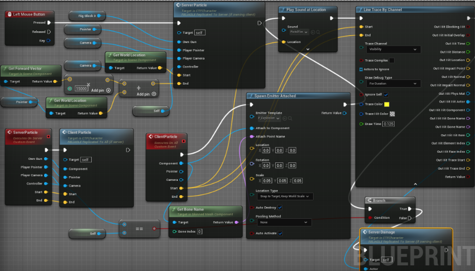
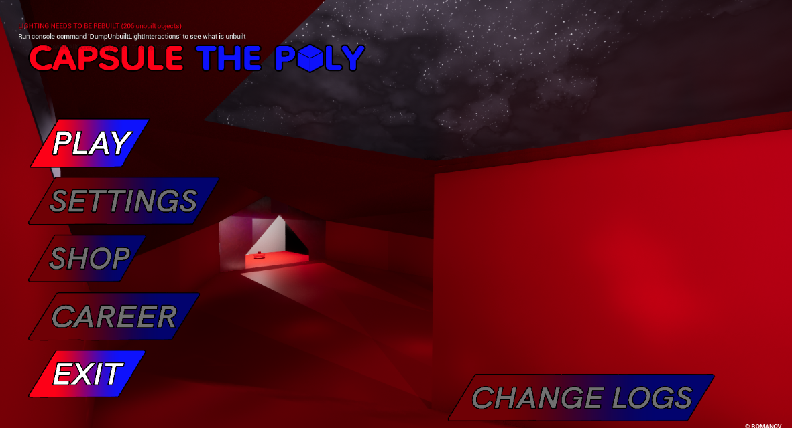
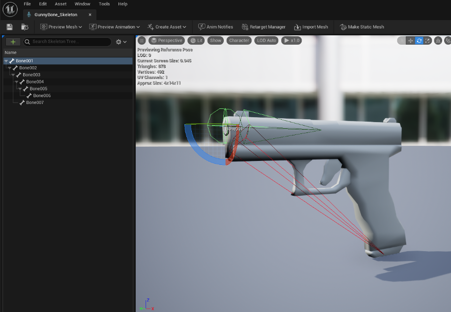
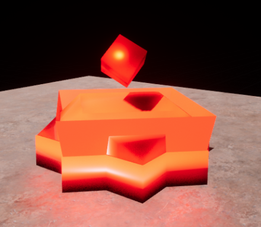
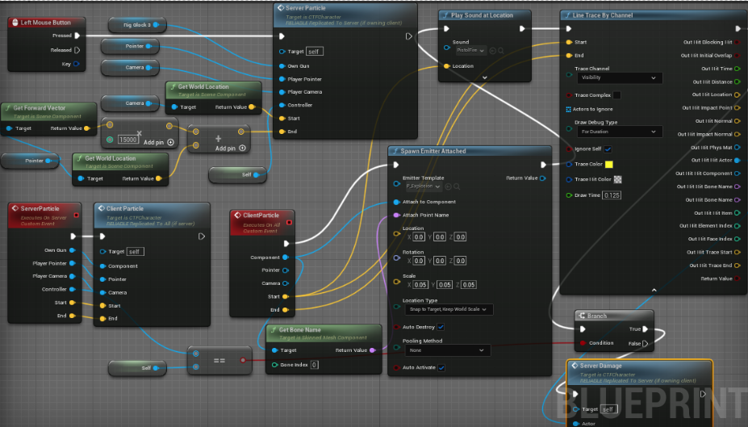
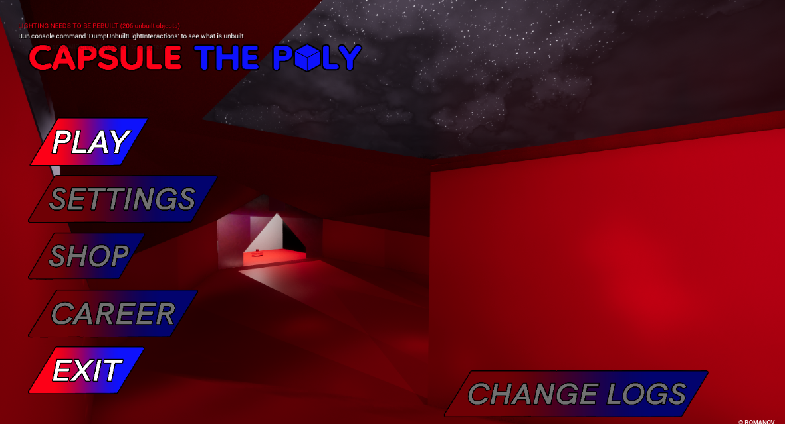
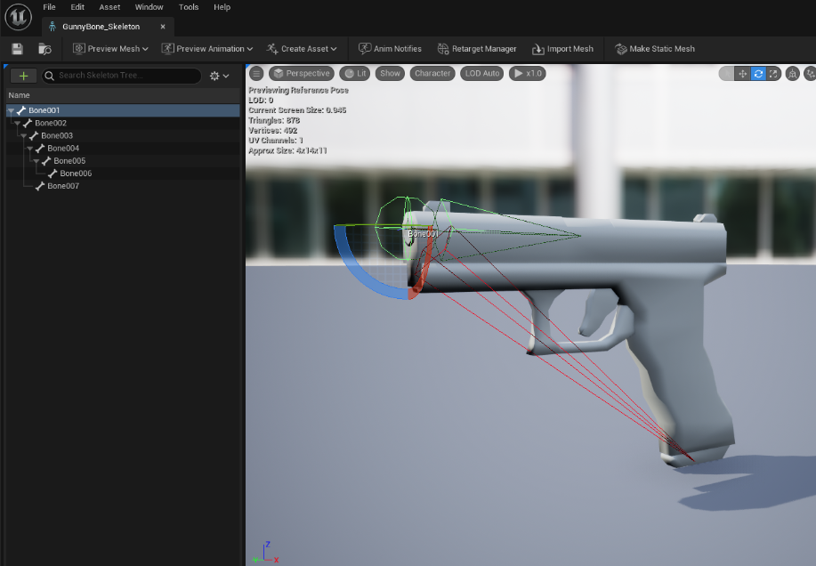
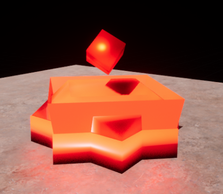
 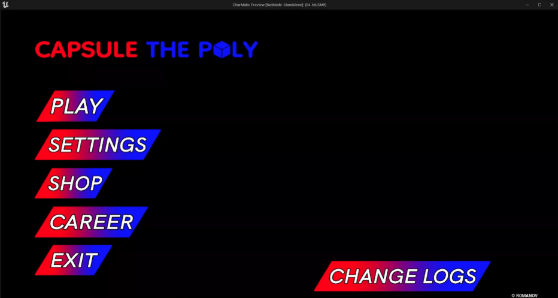
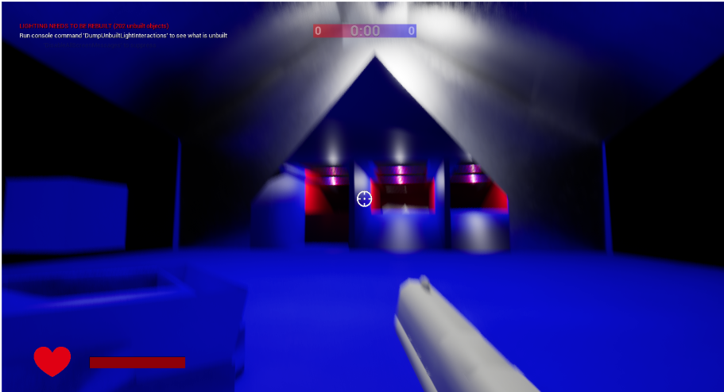
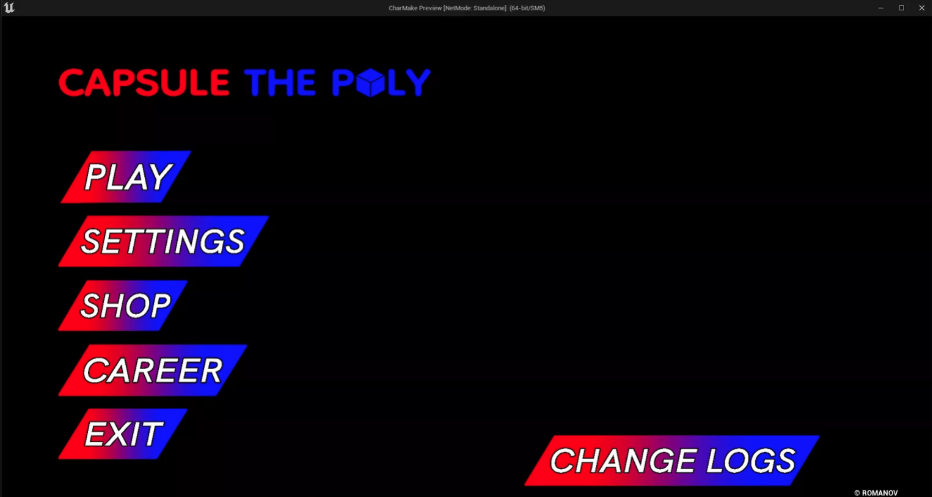
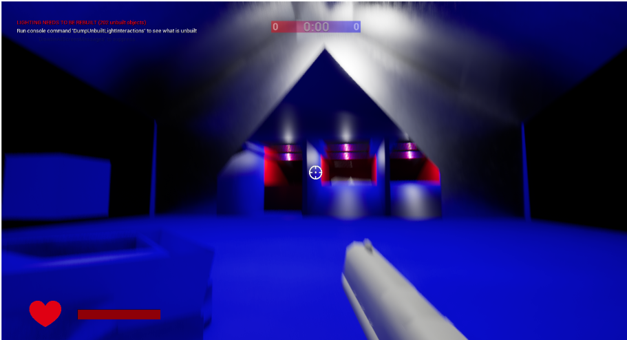